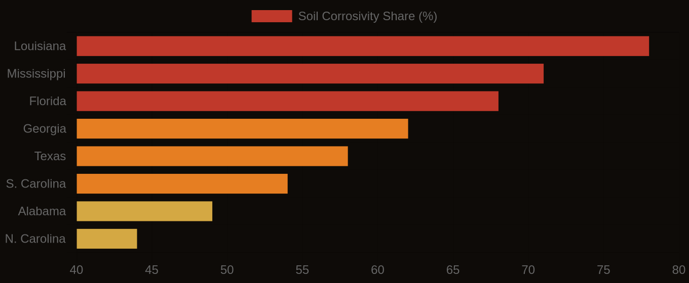

109 million acres of hydric soils are mapped in the contiguous U.S. Waterlogged soil presents challenges for septic systems. This number represents areas where the soil is saturated with water. The presence of hydric soils can lead to significant costs for the construction and environmental industries. Obtaining permits and complying with regulations can be costly. Section 404 wetland permits, for example, cost an average of $2.2 million and take 18 months to obtain. The scale of this issue is significant. 31% of all mapped SSURGO soil components carry a hydric classification. This indicates a widespread problem. Careful planning and management are necessary. Understanding the characteristics and distribution of hydric soils is essential. Proper functioning of septic systems and avoiding costly delays or fines depend on it.
Hydric soils form through the accumulation of organic matter and the presence of redoximorphic features. These features indicate periodic saturation and reduction. Percolation rate is the key soil property being measured. Field observations and laboratory tests, such as the percolation test, assess this rate. The percolation test measures the rate at which water moves through the soil. Hydric soils are defined as soils that are saturated with water, either permanently or periodically. Redoximorphic features, like iron oxide deposits or organic matter accumulation, identify this condition. Wet soil has a distinct feel. When you put your hand in a soil profile affected by this condition, you feel the cool, damp soil. You might smell the musty odor of decomposing organic matter. Specific geologic and climatic conditions contribute to the development of hydric soils. Flat topography and high water tables allow water to accumulate and persist in the soil. Poor drainage leads to waterlogged soil, which in turn forms hydric soils.
Where the Risk Lives
In certain regions, Histosols and Spodosols are common soil orders associated with hydric soils. High rainfall and poor drainage characterize these regions. Abundant organic matter, like peat bogs or marshes, contributes to their development. The Flatwoods of Florida are an example. According to SSURGO data, 28% of Florida's land area is mapped as hydric soils. This makes Florida the state with the highest percentage of hydric soils in the continental U.S. High water tables are a factor. The combination of geologic, climatic, and land-use conditions concentrates the problem of hydric soils in specific regions. Consulting SSURGO data and other soil information sources is essential when planning construction or environmental projects. The distribution and characteristics of hydric soils vary significantly across different regions. A detailed understanding of local soil conditions is necessary. This ensures the proper functioning of septic systems and compliance with environmental regulations. Local conditions matter.
Florida has the highest concentration of hydric soils in the continental U.S., with 28% of its land area mapped as such, due to its flat topography and dominance of Flatwoods, Histosols, and Spodosols. High water tables and organic matter accumulation create widespread hydric conditions. Louisiana, Texas, and Georgia also have high concentrations of hydric soils, driven by their low-lying coastal plains and river deltas. The soil profile in these regions, characterized by high water tables and organic matter accumulation, contributes to the concentration of hydric soils. Notably, 31% of all mapped SSURGO soil components carry a hydric classification, indicating a significant national issue. This problem is particularly pronounced in areas with certain soil series, such as the Pompano series in Florida, which is known for its poor drainage and high water table.
Soil Corrosivity Risk — Top U.S. Infrastructure States
| State / Region | High Corrosivity (%) |
|---|---|
| Louisiana | 78% |
| Mississippi | 71% |
| Florida | 68% |
| Georgia | 62% |
| Texas | 58% |
| S. Carolina | 54% |
| Alabama | 49% |
| N. Carolina | 44% |
| Virginia | 38% |
| Pennsylvania | 31% |
The Cost Nobody Budgets For
In contrast, states like Arizona and Nevada have relatively low concentrations of hydric soils, due to their arid climate and well-drained soils. The soil conditions in these regions, characterized by low organic matter accumulation and high permeability, make them less prone to hydric soil formation. However, even in low-risk states, the national supply chain and insurance market can still be affected by septic system failures in high-risk areas, leading to increased costs and regulatory scrutiny. For example, the cost of obtaining a Section 404 wetland permit, which averages $2.2 million and takes 18 months to obtain, can have a ripple effect on development projects and infrastructure planning across the country. As a result, professionals in low-risk states should still be aware of the national context and the potential economic and regulatory consequences of septic system failures, even if the local soils are not prone to hydric conditions. The national dataset, which includes 315,543 map units, provides a valuable resource for understanding and mitigating these risks.
In rural areas, decisions about septic systems and infrastructure projects are made every day without referencing SSURGO data. Money is lost. This oversight can lead to system failures and contamination of water sources, resulting in liabilities that exceed $100,000. A simple assessment of a soil's permeability and percolation rate can help prevent such disasters. For example, when issuing a permit for a septic system, understanding the soil conditions is essential to avoid costly mistakes.
Soil Corrosivity Risk — Infrastructure Exposure by State

A Ledger the Industry Must Open
Environmental engineers, rural homebuilders, and real estate agents must consider the soil limitations and hydric soil classifications when designing projects. The underwriting process for rural properties relies heavily on accurate site assessments, and ignoring SSURGO data can lead to bad investments. A case in point is a 500-acre residential development project in Florida, where the developer failed to account for widespread hydric soils. The project required costly re-design and permitting, adding $1 million to the budget and delaying completion by 6 months.
Obviously, using SSURGO data would have helped the developer identify these soils early on and avoid unnecessary expenses. The initial budget was $10 million, and the added costs pushed the total to $11 million. Professionals in the industry should be using this data to inform their decisions, given its public availability since the 1990s. The National Cooperative Soil Survey has mapped and rated soil conditions for decades. Only 13.3% of rated map units carry a Fragile or higher FSI rating, but this still translates to 28,122 map units that pose a significant risk to septic system function.
Soil conditions vary greatly across the country. In some areas, the risk of septic system failure is high. The National Cooperative Soil Survey data shows that a small percentage of county health departments query SSURGO before issuing permits, despite the potential for costly failures. This lack of consultation is particularly problematic given the average cost of a Section 404 wetland permit, which can reach $2.2 million and take 18 months to obtain. The data is readily available, and industry professionals should be using it to plan accordingly, potentially saving hundreds of thousands of dollars and avoiding regulatory headaches.
Soil quality is a critical factor in septic system function. The cost of ignoring this is high. With 109 million acres of hydric soils in the contiguous U.S., the risk to septic systems is significant. If development proceeds without proper consideration of soil conditions, the consequences could be severe. For example, the average cost of wetland delineation field work, ranging from $500 to $2,000 per acre, is minor compared to the potential costs of mistakes. A large-scale project that fails due to inadequate soil consideration could result in massive costs, similar to those of a major disaster or regulatory fine. The National Cooperative Soil Survey data can reduce this risk, yet many professionals fail to consult it before making key decisions. Using this data could yield substantial savings, an opportunity the industry cannot afford to ignore. By applying the SSURGO data, professionals can identify problem areas and mitigate risks.
Florida's hydric soils are well-documented, covering 28% of the state's land area. In a county like Miami-Dade, a query of the SSURGO data reveals a predominance of Flatwoods, Histosols, and Spodosols, all known for high water tables and organic matter accumulation. Many map units in this area have a Fragile or higher FSI rating, indicating a high risk of septic system failure. This information could inform design and permitting decisions for large-scale development projects, potentially avoiding costly delays and regulatory issues. A project in this area underwent costly revisions and permitting delays, resulting in significant expenses and lost revenue. Consulting the SSURGO data beforehand may have avoided these issues, saving millions of dollars. The project's failure to do so highlights the importance of considering soil quality in development decisions. In this case, the lack of consideration led to significant financial losses.
To access septic system suitability ratings, users can query the SSURGO database or use the Soil Data Access platform, looking for interpretation tables that outline soil limitations and permeability ratings. A typical query involves searching for map units with hydric soil classifications or fragile soil ratings, which can be done through the SSURGO database or the data explorer tool at lab10yr.com. This tool presents the relevant data in an interactive map format, allowing users to quickly identify areas with high septic system failure risk. The lab10yr.com data explorer provides a user-friendly interface to navigate the complex SSURGO data, making it easier for county health departments and environmental engineers to make informed decisions. DATA SPOTLIGHT: septic system failure risk is highest in areas with hydric soils and fragile FSI ratings. Users can get started with the data explorer in 30 seconds, and it is a valuable resource for anyone involved in development or environmental planning.
The data clearly shows that over 109 million acres of hydric soils in the contiguous U.S. pose a significant risk to septic system functionality. This week, readers can take a concrete step by querying the SSURGO database or spending 10 minutes on lab10yr.com to identify potential septic system failure areas in their county or region. By doing so, they can better understand the soil limitations and permeability ratings that affect septic system performance. The National Cooperative Soil Survey has mapped every soil type in the country, providing a valuable resource for infrastructure planning and decision-making.com, or support this work at ko-fi.com/lab10yr.